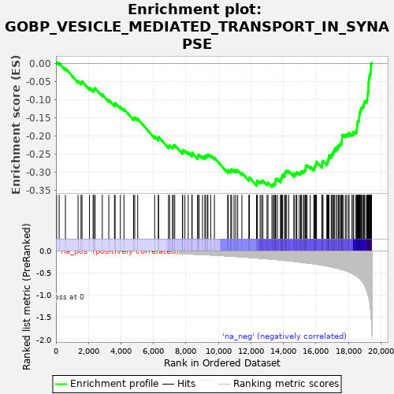
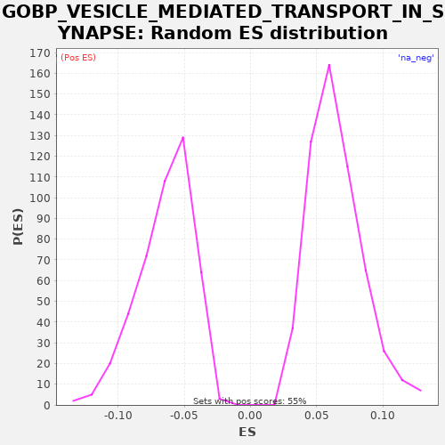

| | | Dataset | A_X_tradeoff |
| Phenotype | NoPhenotypeAvailable |
| Upregulated in class | na_neg |
| GeneSet | GOBP_VESICLE_MEDIATED_TRANSPORT_IN_SYNAPSE |
| Enrichment Score (ES) | -0.33987483 |
| Normalized Enrichment Score (NES) | -5.3081074 |
| Nominal p-value | 0.0 |
| FDR q-value | 0.0 |
| FWER p-Value | 0.0 |
Table: GSEA Results Summary

Fig 1: Enrichment plot: GOBP_VESICLE_MEDIATED_TRANSPORT_IN_SYNAPSE
Profile of the Running ES Score & Positions of GeneSet Members on the Rank Ordered List
| SYMBOL | RANK IN GENE LIST | RANK METRIC SCORE | RUNNING ES | CORE ENRICHMENT | | 1 | SLC32A1 | 40 | -0.000 | 0.0036 | No |
| 2 | SLC2A4 | 198 | -0.001 | 0.0011 | No |
| 3 | SYT8 | 583 | -0.003 | -0.0131 | No |
| 4 | SLC17A7 | 1362 | -0.007 | -0.0478 | No |
| 5 | RAB27B | 1544 | -0.008 | -0.0515 | No |
| 6 | CEL | 1605 | -0.009 | -0.0489 | No |
| 7 | PLD2 | 2065 | -0.011 | -0.0670 | No |
| 8 | STX11 | 2288 | -0.013 | -0.0729 | No |
| 9 | P2RY1 | 2335 | -0.013 | -0.0696 | No |
| 10 | PRKCG | 2415 | -0.014 | -0.0680 | No |
| 11 | NAPA | 2854 | -0.016 | -0.0850 | No |
| 12 | SYT6 | 3253 | -0.019 | -0.1000 | No |
| 13 | BLOC1S6 | 3604 | -0.021 | -0.1125 | No |
| 14 | SLC17A8 | 3643 | -0.022 | -0.1088 | No |
| 15 | SYT12 | 3966 | -0.024 | -0.1198 | No |
| 16 | PCDH17 | 4187 | -0.026 | -0.1255 | No |
| 17 | GIPC1 | 4779 | -0.031 | -0.1505 | No |
| 18 | DNM1 | 4851 | -0.032 | -0.1485 | No |
| 19 | SNAPIN | 5035 | -0.034 | -0.1523 | No |
| 20 | SNCG | 6077 | -0.046 | -0.2006 | No |
| 21 | ADORA2A | 6303 | -0.049 | -0.2066 | No |
| 22 | SNAP23 | 6319 | -0.049 | -0.2017 | No |
| 23 | SLC17A6 | 6930 | -0.058 | -0.2277 | No |
| 24 | SLC18A2 | 6996 | -0.058 | -0.2254 | No |
| 25 | ARF6 | 7175 | -0.061 | -0.2289 | No |
| 26 | DRD4 | 7225 | -0.062 | -0.2258 | No |
| 27 | STX2 | 7314 | -0.063 | -0.2247 | No |
| 28 | SYN3 | 7791 | -0.070 | -0.2437 | No |
| 29 | UNC13C | 7801 | -0.070 | -0.2385 | No |
| 30 | HTR1B | 7940 | -0.072 | -0.2399 | No |
| 31 | STON1 | 8144 | -0.076 | -0.2448 | No |
| 32 | HPCA | 8368 | -0.079 | -0.2507 | No |
| 33 | TOR1A | 8385 | -0.080 | -0.2458 | No |
| 34 | P2RX1 | 8722 | -0.085 | -0.2576 | No |
| 35 | STX3 | 8737 | -0.086 | -0.2526 | No |
| 36 | CLSTN1 | 8823 | -0.087 | -0.2513 | No |
| 37 | CTBP2 | 9024 | -0.090 | -0.2560 | No |
| 38 | CPLX3 | 9171 | -0.093 | -0.2579 | No |
| 39 | LRRK2 | 9194 | -0.093 | -0.2534 | No |
| 40 | CDK5 | 9308 | -0.095 | -0.2536 | No |
| 41 | STX19 | 9357 | -0.096 | -0.2504 | No |
| 42 | ITGB3 | 9526 | -0.099 | -0.2534 | No |
| 43 | VAMP4 | 9756 | -0.104 | -0.2596 | No |
| 44 | VPS18 | 10573 | -0.121 | -0.2962 | No |
| 45 | DGKQ | 10611 | -0.122 | -0.2925 | No |
| 46 | NLGN3 | 10764 | -0.126 | -0.2947 | No |
| 47 | SLC4A8 | 10815 | -0.127 | -0.2916 | No |
| 48 | OPHN1 | 10964 | -0.131 | -0.2936 | No |
| 49 | DENND1A | 11072 | -0.133 | -0.2935 | No |
| 50 | SNAP29 | 11190 | -0.136 | -0.2939 | No |
| 51 | CHRNA5 | 11448 | -0.143 | -0.3015 | No |
| 52 | ITSN1 | 11877 | -0.154 | -0.3180 | No |
| 53 | CACNB2 | 11911 | -0.154 | -0.3141 | No |
| 54 | ERC2 | 12353 | -0.166 | -0.3312 | No |
| 55 | SYNJ2 | 12375 | -0.167 | -0.3267 | No |
| 56 | SV2A | 12402 | -0.167 | -0.3223 | No |
| 57 | AP3B1 | 12569 | -0.172 | -0.3253 | No |
| 58 | GRIP1 | 12657 | -0.175 | -0.3241 | No |
| 59 | NUMB | 12739 | -0.177 | -0.3226 | No |
| 60 | PPP3CC | 12997 | -0.184 | -0.3303 | No |
| 61 | PSEN1 | 13053 | -0.186 | -0.3274 | No |
| 62 | RAB5A | 13294 | -0.194 | -0.3342 | Yes |
| 63 | SNAP47 | 13377 | -0.196 | -0.3328 | Yes |
| 64 | BTBD9 | 13442 | -0.199 | -0.3304 | Yes |
| 65 | DRD2 | 13501 | -0.201 | -0.3277 | Yes |
| 66 | PLD1 | 13502 | -0.201 | -0.3220 | Yes |
| 67 | PRKAR1B | 13536 | -0.202 | -0.3181 | Yes |
| 68 | NLGN2 | 13638 | -0.205 | -0.3176 | Yes |
| 69 | UNC13B | 13828 | -0.211 | -0.3218 | Yes |
| 70 | HTR2A | 13842 | -0.212 | -0.3168 | Yes |
| 71 | RAP1A | 13892 | -0.213 | -0.3136 | Yes |
| 72 | GRIK5 | 13928 | -0.215 | -0.3097 | Yes |
| 73 | AP2B1 | 13960 | -0.216 | -0.3057 | Yes |
| 74 | CALY | 14085 | -0.220 | -0.3064 | Yes |
| 75 | USP46 | 14092 | -0.221 | -0.3011 | Yes |
| 76 | SYNDIG1 | 14129 | -0.222 | -0.2972 | Yes |
| 77 | CALM3 | 14202 | -0.224 | -0.2953 | Yes |
| 78 | PLAA | 14329 | -0.229 | -0.2961 | Yes |
| 79 | PPFIA3 | 14656 | -0.242 | -0.3074 | Yes |
| 80 | DTNBP1 | 14657 | -0.243 | -0.3017 | Yes |
| 81 | EPS15 | 14781 | -0.248 | -0.3024 | Yes |
| 82 | NCS1 | 14832 | -0.251 | -0.2993 | Yes |
| 83 | CSPG5 | 14981 | -0.257 | -0.3013 | Yes |
| 84 | BACE1 | 15064 | -0.261 | -0.2999 | Yes |
| 85 | ARC | 15110 | -0.263 | -0.2965 | Yes |
| 86 | DVL1 | 15228 | -0.268 | -0.2969 | Yes |
| 87 | SH3GL1 | 15285 | -0.271 | -0.2941 | Yes |
| 88 | GAK | 15353 | -0.274 | -0.2919 | Yes |
| 89 | RAP1B | 15373 | -0.275 | -0.2872 | Yes |
| 90 | PTEN | 15378 | -0.275 | -0.2818 | Yes |
| 91 | SYT5 | 15454 | -0.279 | -0.2800 | Yes |
| 92 | RAB8A | 15658 | -0.288 | -0.2848 | Yes |
| 93 | RIMS1 | 15879 | -0.300 | -0.2905 | Yes |
| 94 | NAPB | 15901 | -0.301 | -0.2860 | Yes |
| 95 | RAB3GAP1 | 15947 | -0.303 | -0.2826 | Yes |
| 96 | SH3GL2 | 15981 | -0.305 | -0.2786 | Yes |
| 97 | STX1B | 16017 | -0.307 | -0.2748 | Yes |
| 98 | ITSN2 | 16043 | -0.308 | -0.2704 | Yes |
| 99 | CYFIP1 | 16376 | -0.327 | -0.2819 | Yes |
| 100 | GIT1 | 16380 | -0.327 | -0.2764 | Yes |
| 101 | STX1A | 16389 | -0.328 | -0.2711 | Yes |
| 102 | DNM2 | 16441 | -0.331 | -0.2681 | Yes |
| 103 | ATAD1 | 16678 | -0.347 | -0.2747 | Yes |
| 104 | RAB11A | 16714 | -0.350 | -0.2708 | Yes |
| 105 | PIP5K1C | 16744 | -0.352 | -0.2666 | Yes |
| 106 | CNR1 | 16770 | -0.354 | -0.2622 | Yes |
| 107 | PICALM | 16796 | -0.355 | -0.2578 | Yes |
| 108 | DNM1L | 16809 | -0.356 | -0.2528 | Yes |
| 109 | BRSK1 | 16945 | -0.366 | -0.2541 | Yes |
| 110 | AP3D1 | 16973 | -0.369 | -0.2498 | Yes |
| 111 | SNPH | 17040 | -0.374 | -0.2476 | Yes |
| 112 | GRIN3A | 17071 | -0.377 | -0.2434 | Yes |
| 113 | DNAJC5 | 17130 | -0.381 | -0.2408 | Yes |
| 114 | PRKCB | 17136 | -0.382 | -0.2353 | Yes |
| 115 | BTBD8 | 17250 | -0.392 | -0.2355 | Yes |
| 116 | STXBP5 | 17259 | -0.392 | -0.2303 | Yes |
| 117 | DOC2A | 17372 | -0.404 | -0.2304 | Yes |
| 118 | PREPL | 17388 | -0.405 | -0.2255 | Yes |
| 119 | ADRA2A | 17460 | -0.413 | -0.2235 | Yes |
| 120 | TRIM9 | 17513 | -0.418 | -0.2205 | Yes |
| 121 | RAB3A | 17573 | -0.424 | -0.2179 | Yes |
| 122 | FCHO2 | 17586 | -0.425 | -0.2128 | Yes |
| 123 | SYNJ1 | 17609 | -0.428 | -0.2083 | Yes |
| 124 | CLCN3 | 17613 | -0.428 | -0.2028 | Yes |
| 125 | CDH2 | 17615 | -0.429 | -0.1971 | Yes |
| 126 | STON2 | 17710 | -0.437 | -0.1963 | Yes |
| 127 | RAB3B | 17837 | -0.452 | -0.1972 | Yes |
| 128 | SYN2 | 17911 | -0.462 | -0.1953 | Yes |
| 129 | GRIPAP1 | 18024 | -0.477 | -0.1954 | Yes |
| 130 | PPP3CB | 18041 | -0.481 | -0.1906 | Yes |
| 131 | AMPH | 18226 | -0.512 | -0.1944 | Yes |
| 132 | DOC2B | 18298 | -0.527 | -0.1924 | Yes |
| 133 | FMR1 | 18315 | -0.530 | -0.1876 | Yes |
| 134 | PPFIA2 | 18440 | -0.555 | -0.1883 | Yes |
| 135 | CADPS | 18509 | -0.572 | -0.1862 | Yes |
| 136 | CALM1 | 18516 | -0.575 | -0.1808 | Yes |
| 137 | SLC18A1 | 18534 | -0.579 | -0.1760 | Yes |
| 138 | NLGN1 | 18538 | -0.580 | -0.1705 | Yes |
| 139 | SYT9 | 18549 | -0.584 | -0.1653 | Yes |
| 140 | APBA1 | 18574 | -0.591 | -0.1609 | Yes |
| 141 | SYN1 | 18608 | -0.603 | -0.1569 | Yes |
| 142 | VAMP2 | 18654 | -0.614 | -0.1535 | Yes |
| 143 | DNM3 | 18657 | -0.615 | -0.1480 | Yes |
| 144 | ADCY1 | 18680 | -0.621 | -0.1434 | Yes |
| 145 | SYT2 | 18688 | -0.626 | -0.1381 | Yes |
| 146 | CANX | 18720 | -0.637 | -0.1340 | Yes |
| 147 | RIMS3 | 18733 | -0.641 | -0.1290 | Yes |
| 148 | STXBP1 | 18776 | -0.657 | -0.1255 | Yes |
| 149 | UNC13A | 18810 | -0.675 | -0.1215 | Yes |
| 150 | RIMS4 | 18865 | -0.699 | -0.1186 | Yes |
| 151 | ATP2A2 | 18927 | -0.732 | -0.1161 | Yes |
| 152 | RAPGEF4 | 18956 | -0.751 | -0.1119 | Yes |
| 153 | ROCK1 | 18970 | -0.757 | -0.1069 | Yes |
| 154 | GSK3B | 19016 | -0.783 | -0.1035 | Yes |
| 155 | SNCB | 19120 | -0.881 | -0.1032 | Yes |
| 156 | PACSIN1 | 19150 | -0.914 | -0.0990 | Yes |
| 157 | NSG1 | 19177 | -0.940 | -0.0947 | Yes |
| 158 | BRSK2 | 19178 | -0.940 | -0.0890 | Yes |
| 159 | CDK5R1 | 19197 | -0.967 | -0.0842 | Yes |
| 160 | DDC | 19206 | -0.979 | -0.0790 | Yes |
| 161 | SYT11 | 19221 | -0.998 | -0.0740 | Yes |
| 162 | SYP | 19232 | -1.011 | -0.0689 | Yes |
| 163 | BSN | 19236 | -1.016 | -0.0633 | Yes |
| 164 | SNCA | 19238 | -1.018 | -0.0577 | Yes |
| 165 | STXBP5L | 19242 | -1.025 | -0.0522 | Yes |
| 166 | CPLX1 | 19263 | -1.051 | -0.0475 | Yes |
| 167 | FGF14 | 19272 | -1.069 | -0.0423 | Yes |
| 168 | DNAJC6 | 19294 | -1.107 | -0.0377 | Yes |
| 169 | SYT1 | 19306 | -1.129 | -0.0326 | Yes |
| 170 | SYT7 | 19343 | -1.229 | -0.0287 | Yes |
| 171 | CADPS2 | 19372 | -1.332 | -0.0245 | Yes |
| 172 | SNAP91 | 19377 | -1.355 | -0.0190 | Yes |
| 173 | RIMS2 | 19390 | -1.379 | -0.0140 | Yes |
| 174 | PCLO | 19392 | -1.381 | -0.0084 | Yes |
| 175 | SNAP25 | 19399 | -1.425 | -0.0030 | Yes |
| 176 | CPLX2 | 19428 | -1.589 | 0.0012 | Yes |
Table: GSEA details [plain text format]

Fig 2: GOBP_VESICLE_MEDIATED_TRANSPORT_IN_SYNAPSE: Random ES distribution
Gene set null distribution of ES for GOBP_VESICLE_MEDIATED_TRANSPORT_IN_SYNAPSE